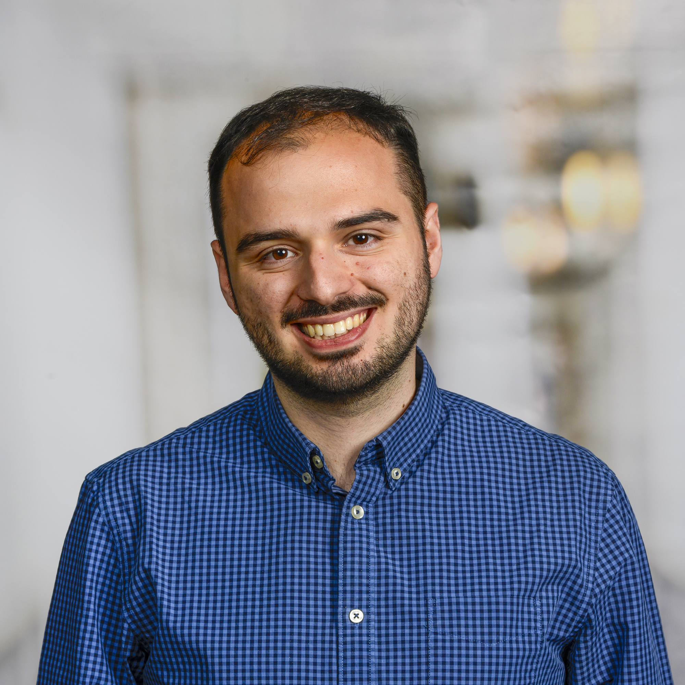

Computer Vision Engineer passionate about applied research, real-world impact, and human-centred machine learning. Specializing in vision transformer optimization, pose estimation, and edge device deployment. Seeking roles combining innovation, systems thinking, and cutting-edge AI.
Python, MATLAB/Octave, C++
PyTorch, HuggingFace Transformers, Torchvision, Scikit-learn, NumPy, SQL, Git, Docker